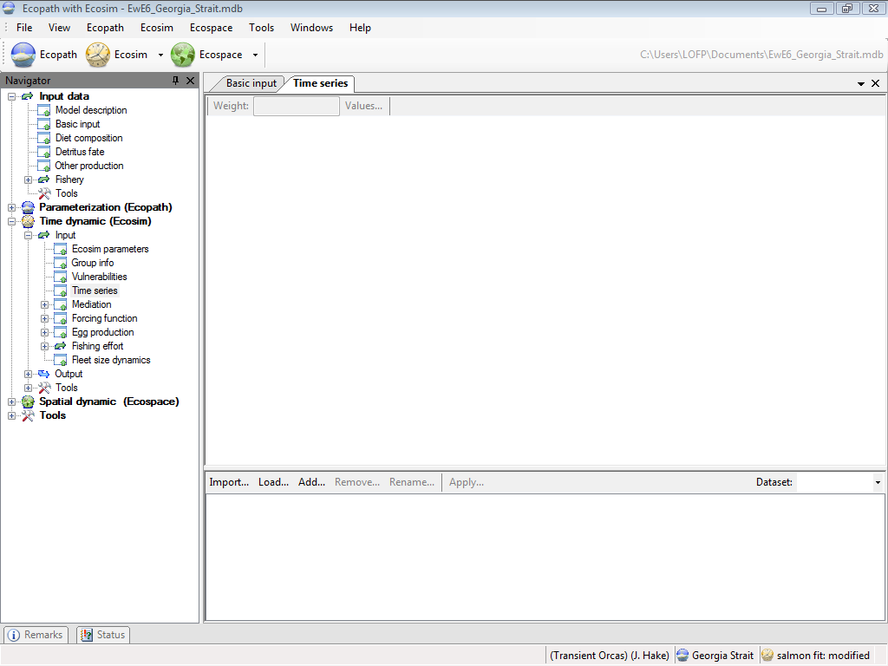
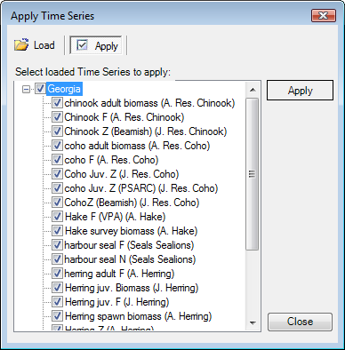
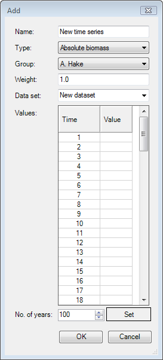
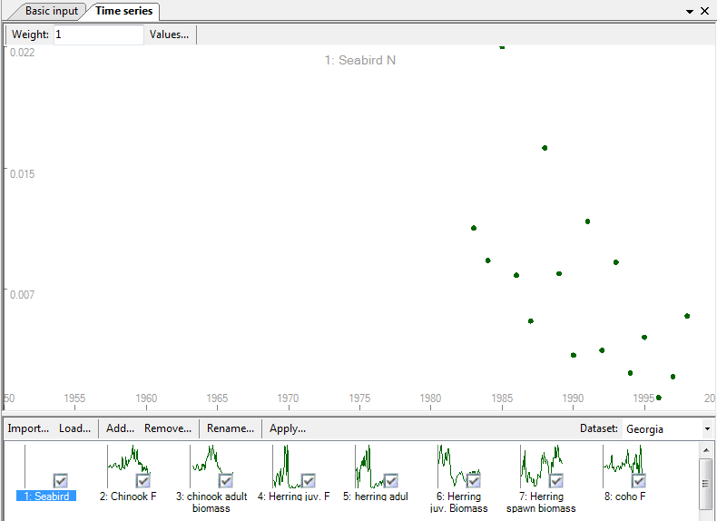

There are two main types of data that you can read in to Ecosim: historical comparison data and time forcing data. Historical comparison data enable comparison between historical observations and the model’s predictions. Time forcing data are used to force certain variables in the model (i.e., ‘drive’ the model). Fishing effort (by gear or by pool) and fishing mortality can be forced in Ecosim.
The Time series form (Time dynamic (Ecosim) > Input > Time series) provides an interface where users can read in, view and activate time series for use in Ecosim.
There are two ways to read time series data into Ecosim: (i) time series can be imported from a csv file or your computer's clipboard (see Import… below); or (ii) time series can be typed or pasted in directly using the Time series form (see Values… below).
When you open the Time series form for the first time, there will be no time series displayed in the lower panel (Figure 8.4). To get started, use either the Import…, Load... or Add… buttons on the lower panel of the form.
Important note: After importing or loading time series, they must be activated using Weight... (see below).
Opens the Import time series dialogue box. This allows you to import multiple time series simultaneously from a csv (comma separated values) format file and is the most commonly-used means of reading time series data into Ecosim. See Import time series for instructions on using this form. Note that this form can also be accessed from the main Ecosim menu.
After importing time series, they must be weighted using Weight... (see below).
Opens the Load time series dialogue box, where you can load previously imported time series using the check-boxes provided (Figure 8.5). After loading time series, they must be weighted using the Weight button at the top of the Weight time series dialogue box (see Weight...below).
Opens the Add time series dialogue box for adding time series manually (Figure 8.6). To add a time series using the Add time series dialogue box:
1.Type or select the number of years for the time series.
2.Click the Set button.
3.Select the data type from the drop-down menu in the Type window. Available data types are Absolute biomass, Average weight (for multi-stanza groups only), Catches, Fishing mortality*, Fleet/gear effort*, Force biomass*, Force catches*, Relative biomass or Total mortality.
*Indicates forcing time series;
4.Select the Ecopath group to which the time series applies from the drop-down Group menu.
5.Assign the data series a relative weight using the Weight window. This represents a prior assessment by the user about relatively how variable or reliable that type of data is compared to the other reference time series (low weights imply relatively high variance or unreliable data; higher weights imply low variance or reliable data).
6.Type the y-values of the time series in the right hand column. Annual time-steps are automatically displayed in the left hand column.
7.Click OK. The time series will be displayed in the main panel of the form and also as a thumbnail in the lower panel.
After adding a time series, it must be activated using Weight... (see below).
Copies the currently-selected time series.
Removes the currently-selected time series.
Assign the data series a relative weight using the Weight window. This represents a prior assessment by the user about relatively how variable or reliable that type of data is compared to the other reference time series (low weights imply relatively high variance or unreliable data; higher weights imply low variance or reliable data).
To weight time series:
1. Click Weight... in the bottom panel of the Time series form to open the Weight time series dialogue box (Figure 8.6) and alter the weights for individual time series.
2. Click the Apply button on the dialogue box.
Note that this dialogue box offers the option to enable or disable time series for use in Ecosim. Clearing the enabled flag on a time series has the same effect as setting the series' weight to 0. However, the enabled flag allows a user to exclude a time series from use in Ecosim without having to alter the relative weight value.
Thumbnails of enabled time series with a positive weight will be shown with a check mark (Figure 8.7).
There are two additional buttons at the top of the Time series form. First select a time series from the thumbnails in the bottom panel, then:
Displays information and values for the currently-selected time series.

Figure 8.4 When you open the Time series form for the first time, there will be no time series displayed in the lower panel

Figure 8.5 The Apply time series dialogue box showing the apply function. Click on the Load button to select time series to load from the database.

Figure 8.6 The Add time series dialogue box.

Figure 8.7 Thumbnails of enabled time series will be shown with a check mark